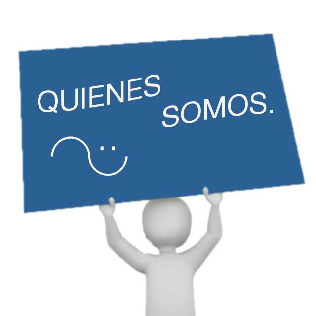

Conocenos...
El objetivo general de la Fundación es contribuir con el tratamiento integral de los niños con cáncer y leucemia del país (Plan AUGE y GES), ayudando a su desarrollo integral, mejorando su calidad de vida y fortaleciendo su integración social y familiar.
En el año 1992 se creó la Fundación Oncológica Las Condes, atendiendo a niños y adultos con cáncer. En el año 2000 se modifican sus estatutos según el decreto N° 994 publicado en el Diario Oficial N° 36817, para atender solamente a niños con cáncer.ORGANIZACIÓN DE LA FUNDACIÓN NIÑO Y CÁNCER
Concejo General
Este consejo sobre la base de un conocimiento técnico acabado de la enfermedad a nivel nacional e internacional, dan las líneas generales del trabajo de la Fundación.
| Dr. Juan Quintana B. | Pediatra Oncólogo Clínica Las Condes Presidente de la Sociedad Latinoamericana de Oncología Pediátrica. |
|
| Dra. Anette Becker | Hospital Sotero del Río | |
| Dra. Victoria Beresi | Pediatra Hemato-oncóloga | |
| Dr. Felipe Espinoza C. | Hospital San Borja Arriarán | |
| Dr. Carlos Rizzardini | Hospital Roberto del Río | |
| Dr. Jaime Rojas | Hospital Regional Concepción | |
| Dr. Eduardo Páez | Hospital Regional de Temuco | |
| Sr. Fernando Manns | Productor Audiovisual | |
| Sr. Daniel Lyon | Abogado |